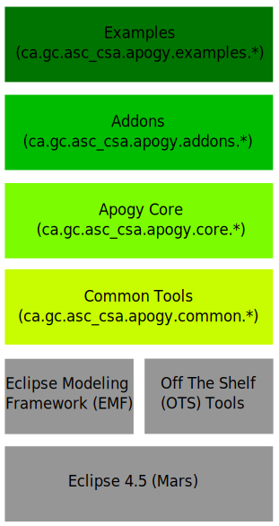
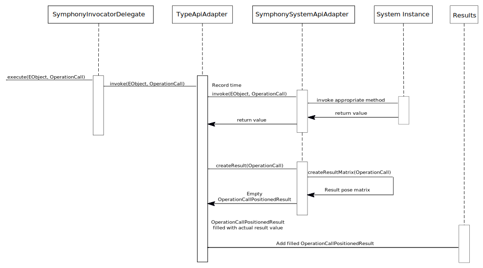
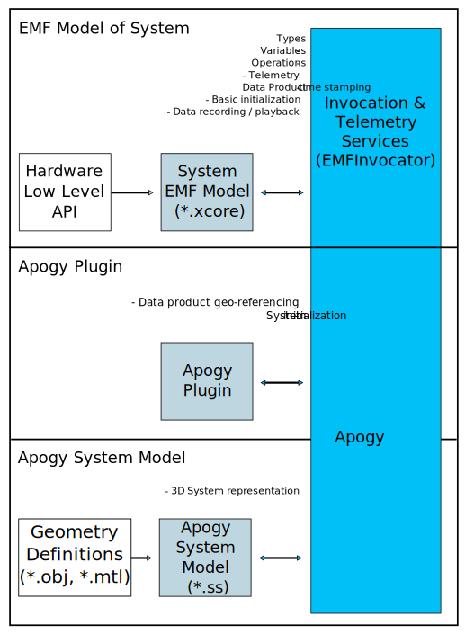
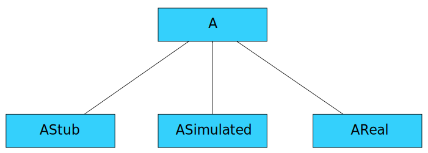
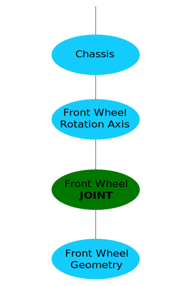

Developing for Apogy
Table Of Contents
-
Developing for Apogy
-
Table Of Contents
-
Apogy Architecture
-
Type Interface Modeling
-
Variable Initialization
-
Operation Call Invocation
-
Apogyzing
-
Definition
-
High-Level Steps
-
Guidelines
-
Suggested Plugin Nomenclature
-
Step 1. Defining The System In EMF
-
Creating An EMF Model Of The System
-
Recommended Class Hierarchy
-
Step 2. Creating the Apogy plugin
-
Definition
-
The Four Steps to making a Apogy Plugin
-
i. Creating the Apogy Plugin Itself
-
ii. Creating a Xcore (.xcore) Model
-
iii. Defining a Subclass of ApogyInitializationData
-
Rules & Guidelines
-
iv. Defining a Subclass of ApogySystemApiAdapter
-
Localization
-
Rules & Guidelines
-
ApogySystemApiAdapter Methods
-
Step 3. Creating the Apogy System Model (*.ss) file
-
Definition
-
The Six Steps to make a Apogy System Model
-
i. Defining the Topology Root
-
Topology Guidelines
-
ii. Defining the Bindings
-
Populating the Feature Roots List
-
Populating the Bindings List
-
Bindings Currently Available in Apogy
-
iii. Defining the Connection Points
-
iv. Defining Type Members (Only for Composite Systems)
-
v. Defining Assembly Links (Only for Composite Systems)
-
vi. Registering your Apogy System Model with Apogy
-
Advanced Topics
-
Specialized Topology Nodes
-
Extending the Tools
-
Built-in Camera View Tools
-
Built-in Map View Tools
-
Units Management
Apogy Architecture
- Based on the Eclipse Modeling Framework (EMF);
- A basic custom framework (
EMFInvocator) defines the
Type,
Variable,
Context,
Operation Call, and
Operation Call Result concepts;
- Apogy specializes a few concepts defined in
EMFInvocator and adds new ones: 3D representation,
Assembly Links,
Connection Points and
Data Product geo-referencing;

Type Interface Modeling
- Recall, that a
System is a specialized
Type, which's use forms much of the backbone of Apogy.
- The interface of the
System is modeled in EMF (e.g. via Xcore) and ends up being transformed into an EClass
- The commands of the
System directly correspond the modeled system's operations.
- The command's parameters and return value types correspond to
EClasses,
EEnumerations, and other built-in types (e.g.
boolean,
float,
int, etc.)
- The states (telemetry) of the
System directly corresponds to the modeled system's attributes.
- The states's types of the
System also correspond to
EClasses,
EEnumerations, and other built-in types.
- The most important fact of the
System is
while there is only one interface, there many be any number of possible implementations.
Variable Initialization
-
Variable initialization is done through the
InvocatorDelegate (which is specialized in Apogy):
- Gets the
ApogySystemApiAdapter associated with the
Variable;
- Instantiate the
System;
- Copies its associated topology and sets it in the
ApogySystemApiAdapter;
- For each
TypeMember:
- Gets the
ApogySystemApiAdapter associated with the
Variable;
- Instantiate the
System;
- Copies its associated topology and sets in the appropriate
ApogySystemApiAdapter;
- Attaches the topology to the parent's
Connection Point;
- Recurse for each
TypeMember of the current
TypeMember.
Operation Call Invocation
- Method invocation is done through EMF reflection;
- Actual invocation done through the invocator delegate, which in turn, delegates part of it to the
ApogySystemApiAdapter.

Apogyzing
Definition
Apogyzing
:
The process of creating EMF models of a System to expose its interface to Apogy.
Some of what you get in return:
- Generic support for command call invocation and documentation;
- Generic support for telemetry (display, recording and playback);
- Command call result tracking (time, position, command parameters);
- 3D
System and
Environment representation.
High-Level Steps
Defining a Apogy
System involves 3 steps:
- Defining the
System in EMF;
- Creating the Apogy plugin;
- Creating the Apogy System Model (*.ss).

Guidelines
Symphonizing Guidelines:
- Keep the
System EMF model seperate from Apogy; this provides modularity and your system can be used before your Apogy plugin is done!
- Attributes are
NEVER changed directly by an operator; they are considered states that are changed in response to command calls and interaction with the environment.
- Commands are used to change the settings of a
System (e.g. operating mode, limits, etc.) as well as to to command actions. However, commands are
NOT used to get the current status of the System; attributes are used instead to accomplish this.
Suggested Plugin Nomenclature
| Name |
Description |
|
<org_prefix>.<system_name>
|
Core plugin that defines the
System and its associated types. This should be kept independently of Apogy.
|
|
<org_prefix>.<system_name>.edit
|
Edit plugin providing basic GUI support for the
System. Generated automatically by EMF.
|
|
<org_prefix>.<system_name>.ui
|
Plugin providing
System-specific contributions to the Eclipse Workbench (e.g. Views, Commands, Menu Contributions, etc.). This plugin may or may not be present.
|
|
<org_prefix>.<system_name>.apogy
|
Plugin defining the Apogy System (*.ss), specialized
ApogyInitializationData and
ApogySystemApiAdapter.
|
|
<org_prefix>.<system_name>.apogy.edit
|
Edit plugin providing basic GUI support for the Apogy System. Generated automatically by EMF. |
Step 1. Defining The System In EMF
Creating An EMF Model Of The System
- Create an Xcore Project named
<org_prefix>.<system_name>, where
<org_prefix> is a placeholder for a prefix appropriate for your organization;
- Rename the
/src-gen
folder to
/src-generated
;
- Create your Xcore model in the
/model
folder;
- Ensure that you change the
modelDirectory
@GenModel directive to point to the
<org_prefix>.<system_name>
/src-generated
folder;
- Ensure that you change the
editDirectory
@GenModel directive to point to the
<org_prefix>.<system_name>.edit
/src-generated/
folder;
- Define your
System classes;
- Implement the methods as required;
- Ensure that you either remove the methods' @generated annotations or change them to @generated_NOT; otherwise, your changes will be overwritten the next time the Xcore compiler runs!
- Override getters for attributes that have a cardinality of [1] (i.e. are required)
- You are done!
Recommended Class Hierarchy

- Define an abstract class (
A) representing your
System; this includes:
- Defining the class itself;
- Defining all the class attributes and their classes;
- Defining all methods as well as their parameters and return values; this may involve specifying additional classes.
- Define a concrete
AStub class that extends
A. The methods for this implementation do nothing. This class can be used in Apogy when playing data back.
- Define a concrete
ASimulated class that extends
A. This implementation provides a simulated
A for Apogy.
- Define a concrete
AReal class that extends
A. This implementation provides an interface to the real (physical) system.
Step 2. Creating the Apogy plugin
Definition
The
Apogy plugin is an EMF (typically Xcore) plugin, which contains the required meta-model to specify the
System's interface with Apogy.
It typically defines a specialization of
ApogyInitializationData; this allows Apogy to be able to both capture as well as restore the specific state of the
System, which is useful in a variety of circumstances. The
ApogySystemApiAdapter is also typically subclassed, allowing one to customize the invocation of the
System's operations.
The Four Steps to making a Apogy Plugin
Creating the Apogy plugin involves four (4) steps:
- Creating the plugin;
- Creating an Xcore model;
- Defining a sub-class of
ApogyInitializationData;
- Defining a sub-class of
ApogySystemApiAdapter.
i. Creating the Apogy Plugin Itself
TODO!
ii. Creating a Xcore (.xcore) Model
TODO!
iii. Defining a Subclass of ApogyInitializationData
The
ApogyInitializationData class only includes the pose of your
System in the
Worksite frame.
Your specialized
ApogyInitializationData:
- Defines the required initialization data for your
System.
- Apogy persists the data for you.
- Apogy delegates to your custom
ApogySystemApiAdapter sub-class, the responsibility to create, populate and apply the data;
Rules & Guidelines
- All attributes in your specialized ApogyInitializationData must be:
- Contained in the
ApogyInitializationData (or marked as
transient);
- Serializable (or have the necessary methods implemented correctly in your Apogy plugin Factory implementation class);
- Should contain all of the data required to bring your
System back to a given state (e.g. modes, actuators, position, etc.)
iv. Defining a Subclass of ApogySystemApiAdapter
Providing a specialized
ApogySystemApiAdapter:
- Allows for the specialization of
OperationCallPositionResult';
- Enables the customized calculation of the result position matrix for each specific
Operation Call;
- Provides support for custom
InitializationData creation, collection and application;
- Grants access to the
Apogy Environment (which includes the worksite, sky, etc.)
Localization
- Apogy does
NOT assume anything about the
System's
Interface Class (apart from it being an EClass), so there is no way for Apogy to know where to get the pose information about your
System.
- There are two ways to implement this:
- Through the
ApogySystemApiAdapter:
- Typically done by using an adapter on the system to figure out when the pose changes and call the
setPoseTransform(Matrix4x4) method of the ''ApogySystemApiAdapter;
- The
MobilePlatform and
Lander examples use this method;
- Have your System implement
PoseProvider (
ca.gc.asc_csa.apogy.core.PoseProvider): The
ApogySystemApiAdapter will handle it for you.
Rules & Guidelines
- Your specialized
ApogySystemApiAdapter is:
-
NOT PERSISTED: it is instantiated every time you call
Reset Instances;
- Not shared between instances of your System;
- While your specialized
ApogySystemApiAdapter can depend on your
System's EMF model, the opposite is not true (would lead to a dependency cycle);
- Just override the methods you need: the
ApogySystemApiAdapter provides adequate default implementation for all methods
ApogySystemApiAdapter Methods
| Method |
Description |
Default Implementation |
Override must call super |
| void
init(
Environment,
Type,
EObject)
|
Initialize the adapter with the
Environment,
Type, and the System instance (
EObject).
|
Initialize the
Environment,
Type, and
EObject (instance) of the adapter.
|
Yes |
| void
apply(
AbstractInitializationData)
|
Applies the specified initialization data to the System. |
Sets the pose of the System relative to the worksite. |
Yes |
|
AbstractInitializationData
createInitializationData()
|
Creates an instance of initialization data. |
Creates an instance of
ApogyInitializationData
|
No |
| void
collect(
AbstractInitializationData)
|
Collects the System's required initialization and stores in the
AbstractInitializationData instance provided.
|
Collects the pose of the System relative to the worksite. |
Yes |
|
OperationCallResult
createResult(
OperationCall)
|
Must create an
OperationCallPositionedResult that will be used to store the result of invoking the specified command.
|
Creates an instance of
OperationCallPositionedResult
|
No |
|
Matrix4x4
createResultMatrix(
OperationCall)
|
Creates the 4-by-4 matrix (
Matrix4x4) that defines the pose of the specified result relative to the System's origin.
|
Return an instance of
Matrix4x4 that is the identity matrix.
|
No |
Step 3. Creating the Apogy System Model (*.ss) file
Definition
Recall that the
Apogy System:
- Is the "LEGO block" of Apogy;
- A
System
is a specialization of
Type;
- Adds functions to assemble systems together through
Connection Points and
Assembly Links;
- Provdes a 3D representation of the System.
The Six Steps to make a Apogy System Model
Creating a
Apogy System Model (*.ss file) involves:
- Defining the
Topology Root;
- Defining the
Bindings;
- Defining the
Connection Points;
Additionally, for Composite
Systems:
- Defining
Type Members;
- Defining
Assembly Links;
Finally:
- Registering your
Apogy System;
i. Defining the Topology Root
The steps to fully defining the
Apogy System's topology are:
- Creating a root node (e.g
AggregateGroupNode)
- Assembly a hierarchy of transforms (e.g
TransformNode,
RotationNode,
PositionNode) to defined how parts are relative in position to each other and allow support for animation;
- Add nodes representing geometries (e.g
URLNode);
- Add other specialized nodes (e.g.
Wheel,
Thruster,
RectangularFrustrumFieldOfView, etc.)
Topology Guidelines
- Be sure to specify the
Node Id for every node. The recommended naming pattern should include the name of the
System as a prefix (e.g. a prefix like "
<SYSTEM_NAME>_SYM_SYS");
- For
TransformNodes that are intended to be used to affect DOF, include
JOINT in the
Node Id;
- Fill in the description with a meaningful explanation (it aids in clarity and long-term maintenance.);
- Defining a joint (either revolution or linear) is typically done using a pair of
TransformNodes:
- The first
TransformNode defines where the joint is and is not intended to change;
- The second
TransformNode (the one with its
Node Id containing
JOINT) is the one that will affect the motion;
- A geometry file (e.g.
CAD) is needed to specify each part that makes up an articulated system. For example:
- One file for the rover chassis, one for the wheel(s);
- One for the base of a PTU Camera, one for the tilt fork and one for the camera;
An example of the general structure given by these guidelines is:

ii. Defining the Bindings
Topology bindings are what Apogy uses to relate selected attributes in the
System's
Interface Class to behaviours of the topology. This allows, for example:
- Binding the position of a certain
TransformNode to a linear position atribute in the System's
Interface Class;
- Binding the vertical and horizontal angles of a FOV in the topology to the FOV of a camera attribute in the System's
Interface Class
Defining the bindings required the following steps:
- Populating the
Feature Roots List
- Populating the
Bindings List
Populating the Feature Roots List
- The
Feature Roots List is where all of the attributes of the
System's
Interface Class that will be used in bindings are specified
- The list of available attributes is automatically populated, based on the
System's specified
Interface Class.
- Populating the
Feature Roots List involves the following:
- Under
Feature Roots List, create a new
Tree Root Node;
- Set the
Source Class of the
Tree Root Node to the same class as the
Interface Class of the
Apogy System;
- Add the required child child under the
Tree Root Node and its sub-nodes to specify the required attributes for the bindings.
Populating the Bindings List
- Populating the
Binding List involves:
- Under
Binding List, create a new
Binding of the required type;
- It is recommended that the name of all binding elements include
BIND
- Set the attributes of the newly created
Binding
Bindings Currently Available in Apogy
The bindings currently available for generic topology
Nodes are:
| Binding |
Applicable Node(s) |
Function |
|
RotationBinding
|
RotationNode,
TransformNode
|
Maps an angular position about a given axis to a numerical attribute. |
|
TranslationBinding
|
PositionNode,
TransformNode
|
Maps a linear translation along a given axis to a numerical attribute. |
|
TransformBinding
|
TransformNode
|
Maps a
TransformNode transform to a
Matrix4x4 attribute.
|
|
EnumerationSwitchBinding
|
GroupNode
|
Switches between sub-topology trees, based on an enumeratuve attribute. |
The bindings currently available for field of view (FOV) topology
Nodes:
| Binding |
Applicable Node(s) |
Function |
|
CircularSectorFieldOfViewBinding
|
CircularSectorFieldOfView
|
Maps the values of a
CircularSectorFieldOfView to another
CircularSectorFieldOfView attribute.
|
|
ConicalFieldOfViewBinding
|
ConicalFieldOfView
|
Maps the values of a
ConicalFieldOfView to another
ConicalFieldOfView attribute.
|
|
RectangularFrustrumFieldOfViewBinding
|
RectangularFrustrumFieldOfView
|
Maps the values of a
RectangularFrustrumFieldOfView to another
RectangularFrustrumFieldOfView attribute.
|
The bindings currently available for vehicle topology
Nodes are:
| Binding |
Applicable Node(s) |
Function |
|
ThrusterBinding
|
Thruster
|
Maps the values of a
Thruster to another
Thruster attribute.
|
iii. Defining the Connection Points
- Recall that,
Connection Points are metaphorical hooks where sub-''Systems'' can be attached.
- A
Connection Point typically defines a physical location where a
System might expect other sub-''Systems'' to be assembled.
- Populating the
Connections Points List involves the following:
- Under the
Connection Points List, create a new
Connection Point;
- Set the name and description of the
Connection Point;
- It is recommended that the name of the
Connection Point include
CONNECT;
- Set the
Node of the
Connection Point.
iv. Defining Type Members (Only for Composite Systems)
TODO!
v. Defining Assembly Links (Only for Composite Systems)
TODO!
vi. Registering your Apogy System Model with Apogy
In order for Apogy to be made aware of your
Apogy System Model, your model must be registered.
Here are the steps to do so:
- Open the
MANIFEST.MF of the the plugin where your
Apogy System Model is defined;
- In the
Extensions tab, click
Add...
- Ensure the "
Show only the extension points from the required plug-ins" checkbox is
NOT checked.
- Select the
ca.gc.asc_csa.apogy.core.invocator.typeContributor extension point;
- Click
Finish
- Select the newly added extension and then click on
Browse for the
URI field;
- Browse to your
Apogy System Model (*.ss) file and click
OK;
- Save the
MANIFEST.MF
Advanced Topics
Specialized Topology Nodes
The currently available specialized topology
Nodes in Apogy are:
| Name |
Plugin / Package |
Description |
|
CircularSectorFieldOfView
|
ca.gc.asc_csa.apogy.addons.sensors.fov
|
Represents a field of view (FOV) that is a circular sector. This is useful for representing the FOV for certain types of line scanner sensors (e.g. SICK Lidar) |
|
ConicalFieldOfView
|
Represents a field of view (FOV) that is a cone. This is used for representing the FOV for sonar sensors or simplified directional antennas. |
|
RectangularFrustrumFieldOfView
|
Represents a field of view (FOV) that is rectangular. This is used for representing the FOV for cameras and many range sensors. |
|
AbstractCamera
|
ca.gc.asc_csa.apogy.addons.sensors.imaging
|
Represents a camera that includes a
RectangularFrustrumFieldOfView and can take an ImageSnapshot''. This is the class expected by the
Apogy Camera View.
|
|
ImageSnapshot
|
Represents an image and its associated
RectangularFrustrumFieldOfView. This is required to enable image projections in Apogy.
|
|
URLNode
|
ca.gc.asc_csa.apogy.common.topology
|
Represents an object's geometry. Refers to the actual geometry by defining a URL to the file containing the geometry. |
|
WayPointPath
|
ca.gc.asc_csa.apogy.addons.geometry.paths
|
Represents a trajectory as a list of way points. |
|
Wheel
|
ca.gc.asc_csa.apogy.addons.vehicle
|
Represents a wheel as a cylinder. Used by the
VehiclePoseCorrector. See the
MobilePlatform Example.
|
|
LanderSphericalFoot
|
Represents a lander foot as a sphere. Used by the
VehiclePoseCorrector. See the
Lander Example.
|
|
Thruster
|
Represents a thruster and its plume. See the
Lander Example.
|
- Extending the built-in tools in Apogy is done through EMF;
- You simply extend the tool you want to customize in your meta-model and implement / override the required methods;
- That's it!
The following built-in
Camera View tools (located in
ca.gc.asc_csa.apogy.addons.sensors.imaging.camera) are available in Apogy:
| Name |
Camera View Configuration Subsection
|
Description |
|
ImageFilter
|
Filters
|
Provides the facility to process or enhance features of a camera image (e.g. edge detection, etc.) |
|
DrawnCameraOverlay
|
Overlays
|
Overlay that is drawn onto a camera image. |
|
AbstractTextOverlay
|
Text-only overlay that is drawn onto a camera image. |
|
ImageCameraOverlay
|
Overlay that provides an
Image with a transparent background that is superimposed onto a camera image.
|
|
CameraTool
|
Tools
|
Tool that provides interaction with mouse motion and selection in the
Apogy Camera View.
|
The following built-in
Map View tools (located in
ca.gc.asc_csa.apogy.core.environment.ui) are available in Apogy:
| Name |
Map View Configuration Subsection
|
Description |
|
ImageMapLayerPresentation
|
Map Layers
|
Provides the image to be displayed for a given
Image Map Layer in the
Map View
|
|
MapAnnotation
|
Annotations
|
Provides annotation (JFreeChart) that can be drawn on top of the map. |
|
AbstractVariableAnnotation
|
Specialization of
MapAnnotation that represents a
Variable on the map.
|
|
VariableTrajectoryAnnotation
|
Specialization of
AbstractVariableAnnotation that draws the trajectory of a
Variable on the map.
|
|
PoseVariableAnnotation
|
Specialization of
AbstractVariableAnnotation that shows the position and orientation of a
Variable on the map.
|
|
VehicleVariableAnnotation
|
Specialization of
PoseVariableAnnotation that shows the position and orientation of a
Variable on the map. The vehicle footprint is represented as a rectangle with configurable dimensions.
|
|
MapTool
|
Specialization of
MapAnnotation that adds interaction with mouse motion and selection in the
Map View.
|
|
TrajectoryPickingTool
|
Specialization of
MapTool that allows a user to define a list of 2D points by clicking on the map.
|
Units Management
- Recall, that an attribute's units (e.g. radians, metres, seconds, etc.) can be specified by using the
csa_units="..." directive in the @GenModel annotations of one's xcore models.
- This information can then be used to perform those
Native Units to a
Different Display unit (e.g. degrees <-> radians)
- In order to have the
Properties View correctly manage attributes for which units have been defined:
- Need to modify the generated method in the generated
ItemProvider for the EClass (found in the respective .edit plugin):
- Add a dependency to ca.gc.asc_csa.apogy.common.emf.ui;
- Replace the
createItemPropertyDescriptor() call with
new ''AbstractUnitItemPropertyDescriptor'';
- Mark the method as
@generated_NOT to prevent your work from being overwritten;
For a concrete example, the following block of code:
/**
* This adds a property descriptor to the Current Pan Angle feature
* @generated
*/
protected void addCurrentPanAnglePropertyDescriptor(Object object)
{
itemPropertyDescriptor.add
(createItemPropertyDescriptor
(((ComposableAdapterFactory) adapterFactory).getRootAdapterFactory(),
getResourceLocator(),
...
}
should become:
/**
* This adds a property descriptor to the Current Pan Angle feature
* @generated_NOT
*/
protected void addCurrentPanAnglePropertyDescriptor(Object object)
{
itemPropertyDescriptor.add
(new AbstractUnitItemPropertyDescriptor
(((ComposableAdapterFactory) adapterFactory).getRootAdapterFactory(),
getResourceLocator(),
...
}